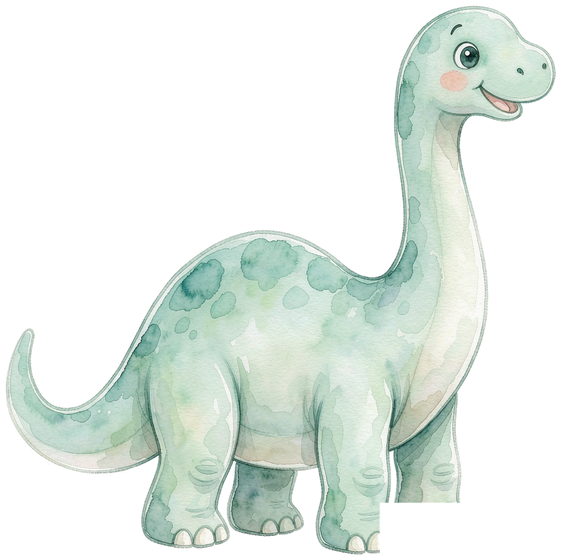
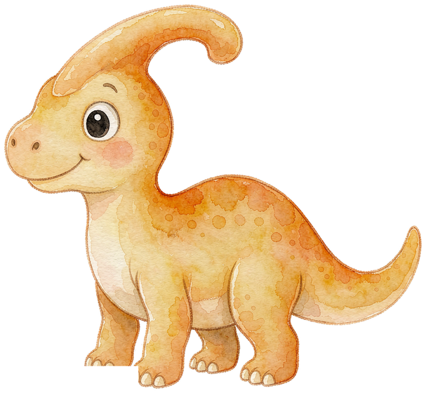
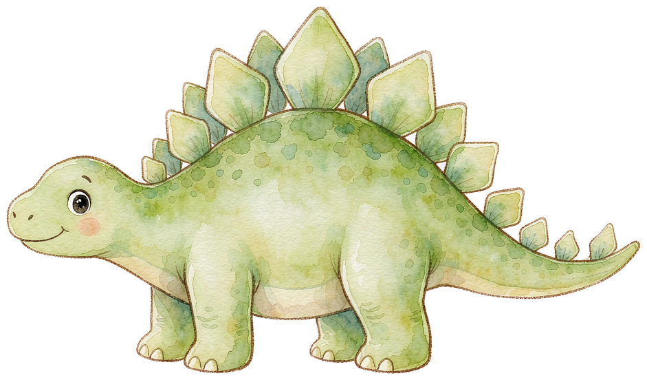
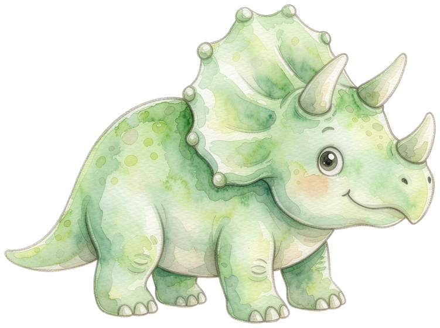
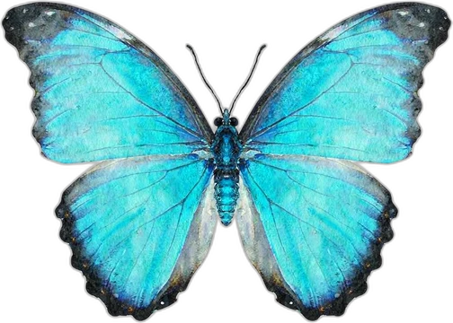
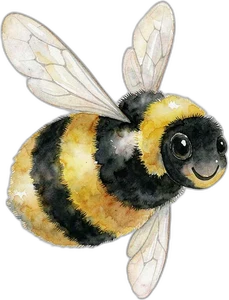
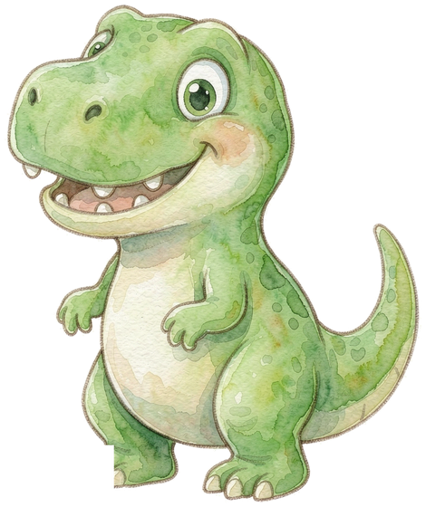
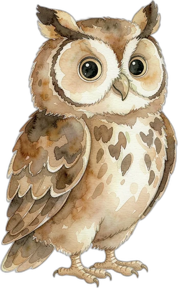
你好呀，森林小小研学师！知识迷雾笼罩了森林，快去破解谜题、驱散迷雾，唤醒智慧树木吧！知识八域 · 森林探险
草原、深海、星空、火山、农场……8 大实景场景，跟着数字人向导探索，答对还能收集主题徽章！
去探险 →诗词林 · 唐诗宋词
109 首经典诗词分三级：启蒙 34 · 进阶 55 · 挑战 20，读一读、听一听、背一背，还能进「笠翁对韵」跟古人学对仗，点亮你的诗卡！
去读诗 →故事屋 · 精选故事
守株待兔、乌鸦喝水、龟兔赛跑……50 个经典故事和成语，点开就能听，听完打个卡！
去听故事 →文化乐园
16 个成语故事 · 8 关成语接龙 · 24 条歇后语 · 12 则小笑话 · 10 首儿歌（音乐盒），一站式文化乐园！
去逛一逛 →课外知识探索馆
恐龙时代 · 动物世界 · 星空宇宙 · 世界国旗……边看边答，把知识收进你的图鉴！
进去逛逛 →3D 展厅漫游
十三面展厅环廊：转身环顾 13 大主题照片墙，中央还有恐龙骨架展台！
进去逛逛 →知识地图
看看你把森林里的哪些知识点点亮了，薄弱的地方会下小雨，去复习就能放晴！
去看看 →智趣拼图屋
图片拼图、七巧板（6 种剪影）、叠积木高塔、迷你魔方——通关还能赢星星！
去拼一拼 →林间工坊
答对题目会捡到树叶、树枝、石头和露珠，攒够了就来合成叶脉书签、化石拓印……
去做手工 →声音森林
29 种真实动物叫声 + 8 种自然之声听一听：狮吼、狼嚎、海豚哨音、雨声、海浪……再去「猜声音挑战」，凭耳朵认出它是谁！
去听一听 →森林小游戏 · 林间赛道
按住拖动 / 方向键 / 摆动手机，带着小伙伴在森林小径奔跑，躲开倒木石头，捡起浆果、星星、宝石和护盾！
去跑一跑 →林间探险日记 · 0/3 页
在每片区域完成 2 个关卡，就能找到一页日记。集齐三页，智慧树会告诉你一个秘密……
翻开看看 →智慧灯塔 · 森林的终局挑战
收集 12 张图鉴卡，做好叶脉书签和智慧星章，去点亮那座熄灭的旧灯塔！
去看看 →学龄前儿童知识篇
六大主题 240 个小问题 + 10 首童谣 + 10 个经典故事，让宝宝在玩中学、唱中学、读中学！
进版块看看 →认知启蒙
颜色、形状、数字、身体、动物——认识身边的世界。
玩一玩 →生活习惯
早睡早起、刷牙洗手、自己穿衣——自己的事情自己做。
玩一玩 →安全常识
红灯停绿灯行、不跟陌生人走——学会保护自己。
玩一玩 →情绪管理
认识开心、生气、害怕——做个情绪小达人。
玩一玩 →儿歌童谣
小星星、两只老虎——经典童谣一起唱起来。
玩一玩 →亲子共读
三只小猪、龟兔赛跑——经典故事听一听。
玩一玩 →小学课程外延篇
109 首分级诗词 + 6 部蒙学经典 + 8 部名著导读 + 30 个科学探究 + 32 道数学思维 + 20 个英语场景，课本之外的大世界！
进版块看看 →诗词进阶
109 首经典诗词分三级：启蒙、进阶、挑战，跟着学跟着背。
去读诗 →蒙学经典
三字经、千字文、弟子规、百家姓、声律启蒙、增广贤文。
读一读 →名著导读
西游记、三国演义、水浒传、红楼梦……一眼看懂四大名著。
看一看 →科学探究
天文、地球、动物、植物、物理、化学 30 个小问题。
问一问 →数学思维
一二三年级 32 道课本之外的数学小谜题。
想一想 →英语拓展
20 个生活场景、100 个实用单词，点一点跟着读。
说一说 →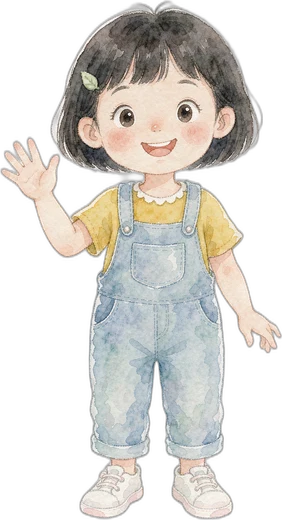
展框每面墙放前 8 条，全部内容去「图鉴列表」看
模型来源：史密森尼学会 3D 数字化项目（公有领域 CC0）
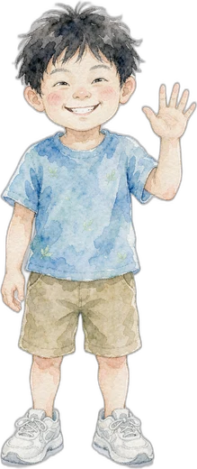
🎨 背景库 · 挑一个喜欢的画纸
纯色 / 渐变是程序画出来的；图片背景有星空宇宙、草原、山川河流、城市、乡村、校园等好多场景，都跟着游戏一起离线保存，点一下就能换上，再放上小动物、小汽车当主角吧～
🖍️ 涂色页是白底黑线的涂画形状（动物、美食、交通、太空都有），点一下就铺满画布，拿起画笔直接涂色就好啦！
🖼️ 我的作品馆（最多存 12 幅）
✨ AI 魔法画 · 选一个想画的主题
魔法画会帮你变出参考图，照着画更简单～
🧊 3D 立牌 · 拖一拖转一转
用手指左右拖动立牌，让它转起来看个够！点「自动转」让它自己转～
✨ 老师涂好的样板
这就是它加到画布后的样子；想更鲜艳可以换一套，也能自己一块块改色～
🖼️ 真实图库
把照片设成描摹底图，能隐隐约约看到照片，再照着画出里面的样子～
「放进画布」把照片直接摆到画布上，可拖动、放大缩小、转方向，拼出你自己的一幅画；也可以设成描摹底图照着画～
🖊️ 线条设置 · 给画布上选中的形状换线条
先点「🧩 部件」选「整体」或某一小块，再在这里换线条；选中线稿或形状后点「✏️ 改部位」，拖画布上的小点还能改形状的样子～
⇶ 对齐与分布 · 像 Office 一样排整齐
先选中 2 个以上图形（Shift 点选或空白处拖框），再点下面任一项～
🔤 文字 · 想写什么就写什么
双击画布上的文字，随时可以回来改哦
📂 文件 · 把画带走或带回来
导出的图片会出现在浏览器下载文件夹里；工程文件下载保存后，换台电脑也能导入继续画～
❓ 帮助 · 关于
中间是画纸，旁边是工具箱（手机上工具箱在画纸下面）。画完点右上角 💾 保存，作品就进「作品馆」啦。
最上面那条：模式条
工具框顶上永远有一条「🖌️ 画笔 ／ ✋ 选择·移动」，后面写着「现在：××」。它管的是手指在画纸上干什么：
- 🖌️ 画笔：在纸上画线（用哪支笔由「🖌️ 画」页签决定，点一下就回到上次那支）。
- ✋ 选择·移动：点一下画上的东西就选中它，拖着能挪位置，拖四角/四边的小方块变大小，拖上面的圆点转方向。它不是"移动专用工具"，而是"用手搬东西"的模式 —— 选形状、选线稿、调位置都靠它。
以前「形状」和「上色」页签里各有一个「✋ 移动」，其实是同一个功能，现在合并到模式条上了，任何页签都看得见。
🔊 语音小老师（念给孩子听）
模式条右边的 🔇 语音 点一下变 🔊 语音，就打开了：放上图形、涂上颜色、保存、清空、进「部件编辑」、发呆一会儿，都会有声音念一句给孩子听。再点一下变回 🔇 就全静音（提示音也一起关）。
- 声音是浏览器自带的中文语音念的，不用下载、断网也能念；不同电脑音色不一样（Windows 上一般是"慧慧/瑶瑶/康康"）。
- 嫌它太像机器人？下面「✨ 更自然的声音」可以换成云端语音（可选，要自己的密钥）。
- 第一次必须在点这个按钮的那一下才出声，这是手机浏览器的规矩，不是坏了。
- iPhone / iPad 请把侧边静音开关拨到响铃，否则网页声音会被系统掐掉。
- 嫌吵就关掉，孩子的画和作品都不会受影响。
浏览器自带的声音有点“机器人味”。想更接近真人，就接一个云端语音服务：按字数计费、要用你自己的密钥。不接完全不影响玩。
🔒 密钥只保存在这台设备的这个浏览器里，只发给你填的那个服务商，本站不收集、不过手。公用电脑上别填，用完点「关掉云端」。
💡 计费：只在需要念一句时才请求，同一句 40 条内会缓存、不重复收费；本次已用 0 字。孩子画画时不会连续念，一天通常几百字。
工具箱六个页签
- 🖌️ 画：挑画笔、笔的粗细、颜色。最常用的就在这里。
- 🔷 形状：星星、心形、云朵、动物脸…拖一下就画出来；还可以切到「🔤 文字」写字。
- 🎀 贴纸：表情和小图标，点一个再点画布就贴上。
- 📚 线稿：111 个已经配好色的图形（动物、植物、山河、建筑、用品），缩略图直接排在页签里，点一下加到画布；点右上角「✨」能放大看。
- 🎨 上色：🪣「涂色块」点哪块涂哪块，还能用渐变和花纹；🖊️ 能把描边换成当前颜色。
- 🖼️ 纸·图：换画纸（纯色 / 渐变 / 风景图 / 涂色页）、真实照片参考、AI 魔法画。
五个必会动作
- 选中：点一下画上的东西，四周出现绿框就是选中了。
- 移动 / 缩放 / 旋转：拖本体挪位置，拖四角和四边的小方块变大小，拖上面的黄圆点转方向。
- 改某一块：双击图形进入「部件编辑」，这时只有被选中的那一块有手柄；拖手柄改这一块，点别的块就切换过去；按 Esc 退出。
- 叠放 / 复制：选中后点画布下方那排按钮可以置顶、置底、复制、组合、对齐。
- 撤销：左上角 ↩️ 撤销、↪️ 重做，画坏了随时退回。
几个好玩的
- 🎬 回放：把你的画一笔一笔放一遍，看自己是怎么画出来的。
- 🧊 3D 立牌：把画贴在一个能转的立牌上。
- ✨ 魔法画：让 AI 变一张参考图，既能当描摹底图，也能直接「➕ 加到画布」。
- 📂 文件：导出 PNG / SVG，或者把工程存成文件，换台电脑导入接着画。
键盘上用这些，比点按钮快得多。手机 / 平板上用手指就行，下面的用不到。
| 操作 | 按键 |
|---|---|
| 撤销 | Ctrl + Z |
| 重做 | Ctrl + Shift + Z 或 Ctrl + Y |
| 复制 / 粘贴选中的图形 | Ctrl + C / Ctrl + V |
| 删除选中的图形 | Delete 或 Backspace |
| 取消选择 / 退出部件编辑 | Esc |
| 放大 / 缩小画布 | + / -，或按住 Ctrl 滚滚轮 |
| 画布恢复 100% | 0 |
| 平移画布 | 按住 空格 拖动；或 ↑↓←→（也可以用 WASD） |
| 右键菜单（复制 / 层级 / 删除） | 在图形上点鼠标右键 |
| 调整工具箱宽度 | 拖动工具箱左边的竖条，双击竖条恢复默认 |
⚠️ 在输入框里打字时，上面的快捷键不会抢键，放心输入。
🔊 打开了语音，却没有声音
- 先看模式条上的按钮是不是 🔊 语音（橙色高亮）；显示 🔇 表示还关着。
- iPhone / iPad：侧边静音开关拨到响铃，网页声音才出得来。
- 第一次必须亲手点一下开关，声音才会响（浏览器的自动播放限制）。
- 系统里没装中文语音包时念不出来：Windows 在「设置 → 时间和语言 → 语言」里给中文加个语音；Mac 在「系统设置 → 辅助功能 → 朗读内容」。也可以直接换 Chrome / Edge。
- 还是不行，就到这一页点 ▶️ 试听一下，下面会写明这台设备用的是什么音色。
☁️ 接了云端声音，试听失败
- HTTP 401 / 403：密钥不对、没开通这个模型，或 Azure 的区域填错了（密钥和区域必须配套，比如申请的是 eastasia 就填 eastasia）。
- 连不上 / Failed to fetch：一般是①地址填错（末尾别多写 /audio/speech，只填到 /v1）；②这个服务商不允许网页直接调用（跨域）。换一家试试，或用支持浏览器调用的官方接口。
- HTTP 429：余额或频率用完了，去服务商后台看看。
- 能试听但孩子画画时没声：确认模式条是 🔊 语音。手机上还有一条规矩——声音必须由手指点出来，所以第一句请在点开关的那一下听。
- 连不上两次会自动退回本机语音并提示，孩子的画不会因此卡住。
- 注意：用云端意味着那句台词会发到服务商那边（本机语音不发任何数据）。
点「💾 保存」提示保存失败
- 用的是浏览器「无痕 / 隐私模式」：关掉无痕，换普通窗口就好。
- 浏览器存储满了：去「作品馆」删掉几幅旧画再保存（最多存 12 幅）。
- 如果是把本地文件直接双击打开的：建议用博客站点里的版本，或换个浏览器试试。
画纸是风景图时，缩略图 / 导出的图里背景不见了
这是浏览器的安全限制（本地图片不允许被复制进图片文件）。画的内容一定会保住，作品馆的缩略图会自动换成纯色底版本。
🪣 涂色块点了没反应
- 先确认「🎨 上色」页签里选中的是 🪣 涂色块。
- 要涂线稿的某一块：双击它进入部件编辑，再点那一块。
- 要涂涂色页：先在「🖼️ 纸·图 → 挑一张涂色页」把线稿铺上画纸，再点色块。
✨ 魔法画一直转圈或出来一张很怪的图
魔法画要联网。网络不通时程序会自动给你一张本地简笔画兜底；出来的是限流提示图时会自动重试，也可以点「🔄 重新变一张」。
换台电脑想接着画
「📂 文件 → 保存工程…」会把整幅画存成文件；到另一台电脑用「导入工程…」打开就行。
工具箱太窄，按钮看不清
拖动工具箱左边的竖条可以加宽（最大约 560px），双击竖条回到默认宽度。手机上它会自动排到画纸下面。
智慧林间学堂 · 创意涂画工坊
一个给孩子的画画角落：不用注册、不用联网也能画，所有作品只留在你自己的浏览器里。
| 项目 | 说明 |
|---|---|
| 版本 | v1.9（2026-10-26） |
| 技术 | 纯前端单文件 HTML + Canvas 2D，无后端、无追踪脚本 |
| 素材 | 形状 / 贴纸 / 111 个线稿全部由程序矢量绘制；风景背景与涂色页是随站点打包的图片 |
| AI 魔法画 | 由第三方绘画服务（pollinations.ai）生成，只是参考图，不保存你的画 |
| 你的作品 | 存在本机浏览器（localStorage），不上传；清浏览器数据会一起清掉，重要作品请用「📂 文件 → 保存工程」留一份 |
| 适合年龄 | 4 岁以上；会打字的孩子可以自己写标题 |
给家长的话
- 这里没有打分、没有排名、没有输赢，画得「像不像」完全不重要。
- 建议先让孩子自由涂，再看「📖 怎么玩」里的部件编辑和渐变，够他玩很久。
- 作品馆只留最近 12 幅，喜欢的记得导出图片收藏。
发现哪里不好用、或者想要新功能，直接把希望的样子描述出来就行 —— 这个工坊就是照着孩子的反馈一点点改出来的。
知识点森林地图
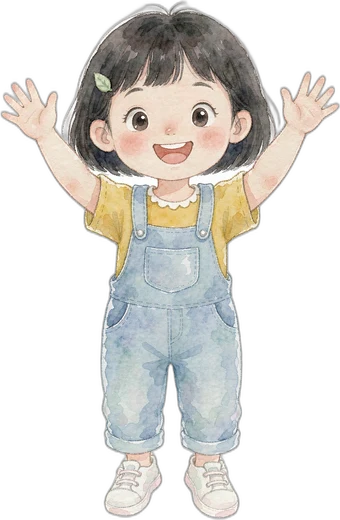
关卡完成！
今天的森林休息时间到啦
你已经完成了今天的学习游戏时长，
去户外活动活动，明天森林再等你哦！
家长验证：请计算 34 × 12 = ?
请将手机横过来游玩
体验更佳哦